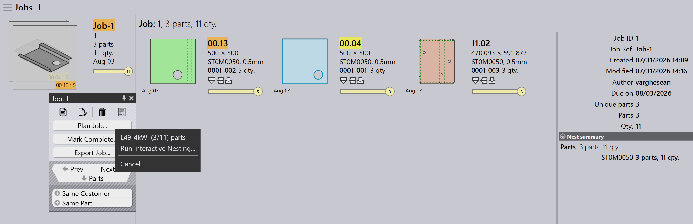

Rencana otomatis
Auto Plan mengotomatiskan proses perencanaan untuk operasi penekukan dan pemotongan. Ini membantu mengoptimalkan penggunaan mesin, mengurangi pemborosan material, dan mengelola prioritas pekerjaan secara efisien.
Alur kerja umum adalah pertama merencanakan komponen untuk mesin penekuk dan kemudian merencanakan komponen untuk mesin pemotong.
Bend plan
Bend Plan mendefinisikan bagaimana komponen didistribusikan ke mesin penekuk yang tersedia.
Contoh: Bend Plan untuk 5 Komponen (masing-masing 10 unit).
-
Klik opsi Plan Job….
-
5 komponen (50 unit) ditugaskan ke TBC-5030 B27
-
Setelah perencanaan, status pekerjaan diperbarui menjadi Bend Planned untuk total 50 unit. Langkah kerja diperbarui dengan mesin penekuk yang ditugaskan dan kuantitas komponen.


Cutting plan - nesting
Setelah rencana penekukan, rencana pemotongan dibuat dengan me-nest komponen pada mesin pemotong yang sesuai. Ada dua cara untuk me-nest:
Plan job for nest - job
Gunakan Plan Job… untuk me-nest semua komponen dalam pekerjaan bersamaan. Engine nesting secara otomatis memproses semua komponen berdasarkan prioritas pekerjaan, tanggal jatuh tempo, dan material. Ini ideal ketika Anda ingin seluruh pekerjaan di-nest dan dikirim ke antrean pemotongan sekaligus.
-
Klik Plan Job… dan pilih mesin mana pun.
-
Engine Pmonitor memulai pekerjaan nesting.
-
Engine membagi pekerjaan sesuai kebutuhan untuk memaksimalkan penggunaan lembar.
| Tidak mungkin me-nest dengan menugaskan material tertentu ke mesin tertentu. Misalnya, Anda tidak dapat me-nest Material1 pada Machine1 dan Material2 pada Machine2 dalam operasi yang sama. |
Plan part for nest - order
Gunakan Plan Part untuk nesting tingkat pesanan — yaitu, me-nest hanya komponen yang dipilih dari pekerjaan. Umumnya, Anda mengklik kanan sebuah komponen dan memilih Same Material, sehingga hanya komponen dengan material yang sama yang dikelompokkan dan di-nest bersama.
Ini berguna ketika Anda ingin mengontrol komponen mana yang di-nest — misalnya, komponen dengan material yang sama atau batch tertentu.

-
Di halaman Detail Pekerjaan, klik kanan komponen mana pun dan pilih Same Material. Semua komponen dengan material yang sama akan terpilih.
-
Klik Plan Part… dan pilih mesin untuk nesting.
-
Engine memproses hanya komponen yang dipilih dan membuat nest.